Pemerintah Desa Sumberkradenan berkomitmen memberikan pelayanan yang profesional, transparan, serta mengutamakan kepentingan masyarakat melalui tata kelola pemerintahan yang baik.
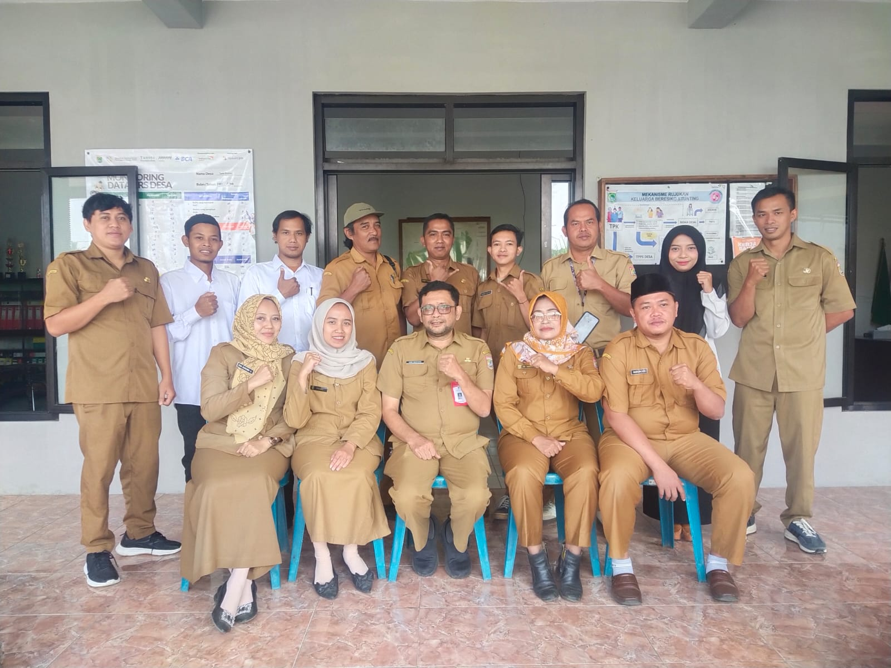
Pemerintah Desa Sumberkradenan terdiri dari PJ Kepala Desa, Sekretaris Desa, perangkat desa, serta kepala dusun yang bekerja sama memberikan pelayanan terbaik kepada masyarakat.
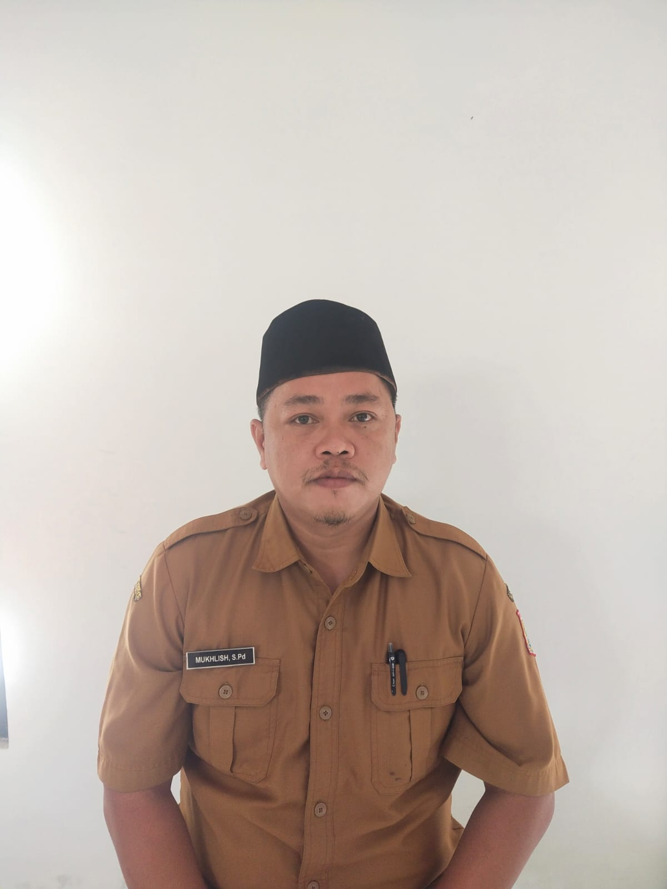
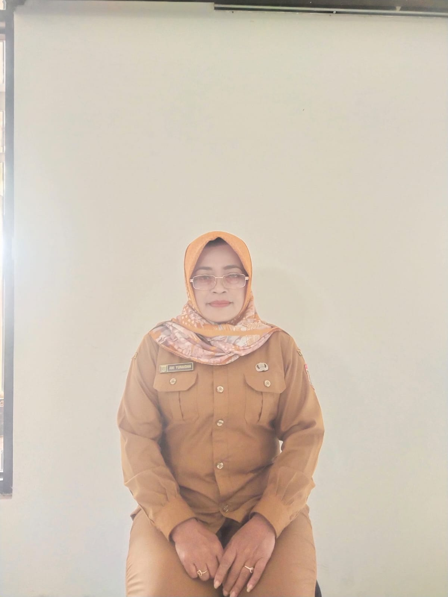
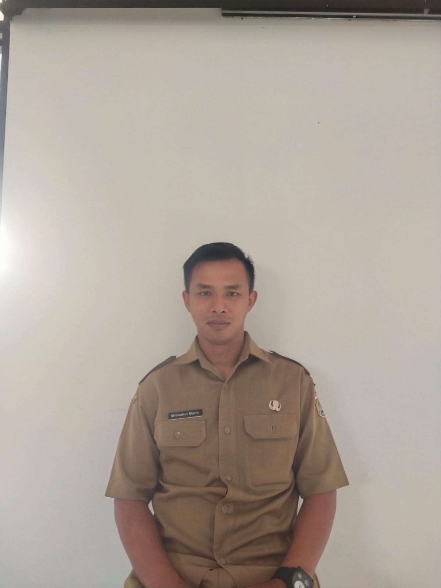
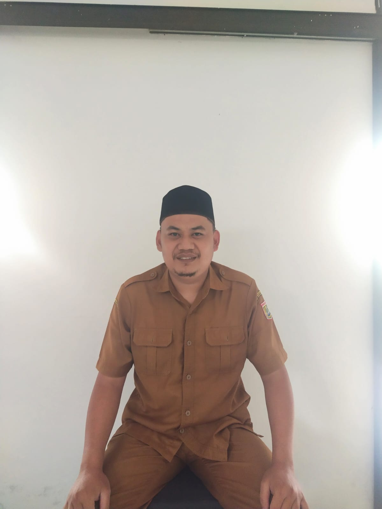
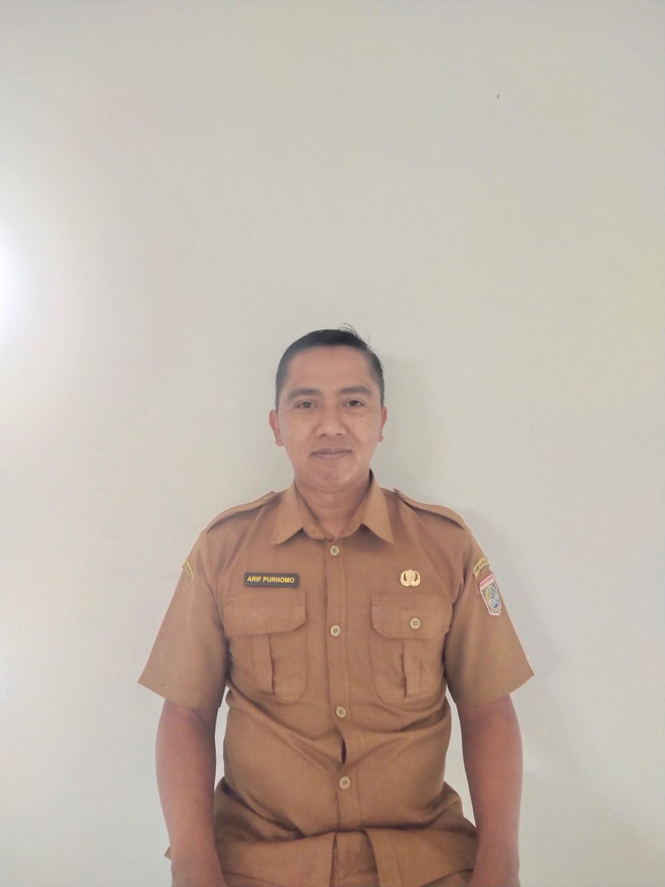
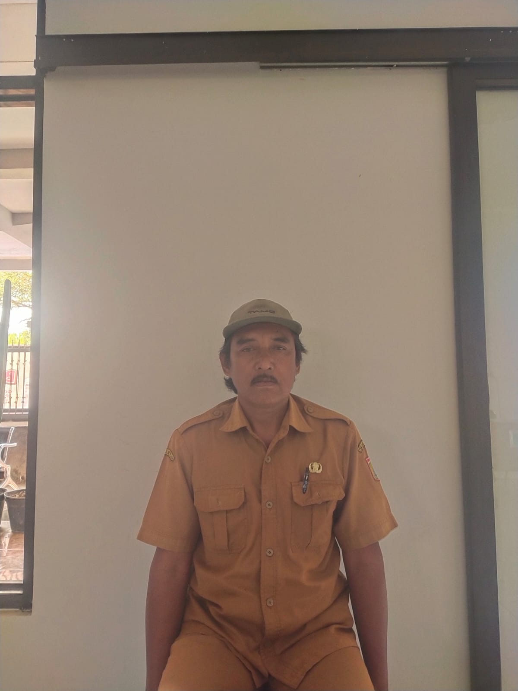
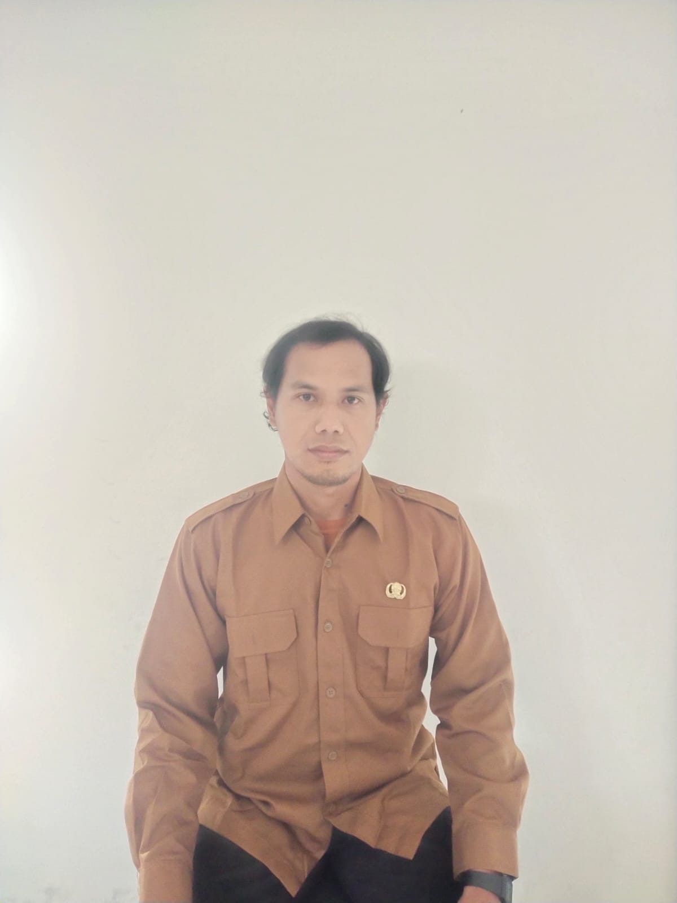
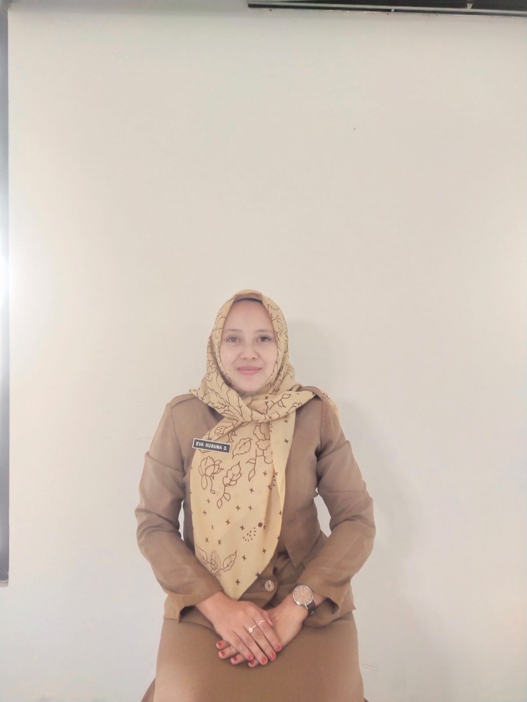
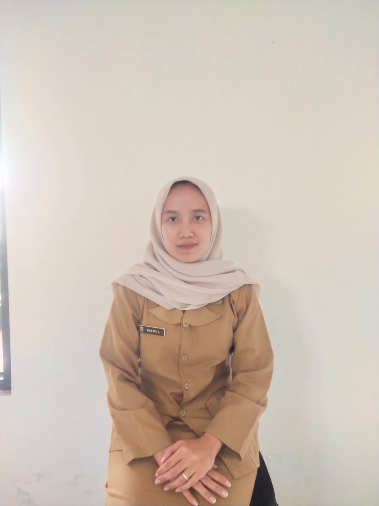
Lembaga kemasyarakatan merupakan mitra Pemerintah Desa dalam membantu penyelenggaraan pemerintahan, pembangunan, pemberdayaan, serta pelayanan kepada masyarakat.
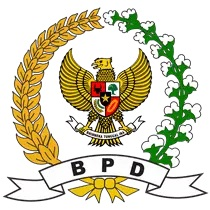
Menyalurkan aspirasi masyarakat, membahas dan menetapkan Peraturan Desa bersama Kepala Desa, serta mengawasi jalannya pemerintahan desa.
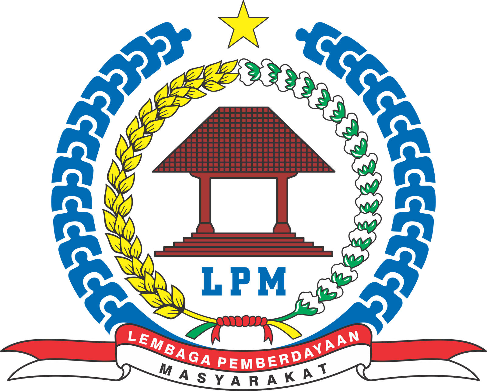
Membantu pemerintah desa dalam perencanaan, pelaksanaan, serta pengawasan pembangunan desa.
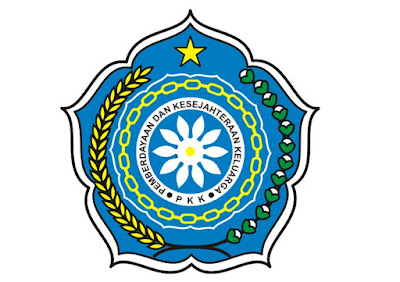
Menggerakkan program keluarga, pendidikan, kesehatan, ekonomi, serta pemberdayaan perempuan.
Memberikan pelayanan kesehatan dasar, pembinaan kesehatan masyarakat, serta kegiatan promotif dan preventif.
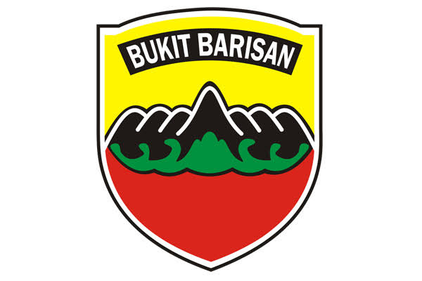
Membina keamanan wilayah, mendukung kegiatan kemasyarakatan, serta menjaga ketahanan desa.
Menjaga keamanan dan ketertiban, membina masyarakat, serta menjadi penghubung antara warga dan kepolisian.
Membantu pengamanan kegiatan desa, penanggulangan bencana, serta menjaga ketertiban lingkungan.
Pemerintah Desa Sumberkradenan melayani administrasi masyarakat sesuai dengan jam operasional berikut.
Pelayanan administrasi dilaksanakan setiap Senin–Jumat pukul 08.00–13.00 WIB. Pada hari Sabtu, Minggu, dan Hari Libur Nasional, kantor desa tidak melayani administrasi.